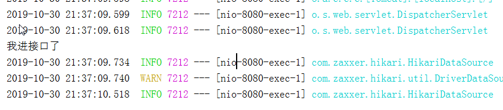

原文连接:https://www.cnblogs.com/heibo/p/11768253.html
一、New->Project
二、点击next
三、在Group栏输入组织名，Artifact就是项目名。选择需要的java版本,点击next
四、添加需要的依赖
在这里我们也可以添加sql方面的依赖，这样的话，我们就不用手动在pom文件添加依赖了
五、修改您希望放项目的位置，点击finish，等待idea下载springboot项目模板和相关的依赖

项目构建完成后的目录结构
六、如果需要用mybatis连接mysql数据库
1、添加连接数据库的依赖（在pom.xml中添加以下内容，maven将自动把相关依赖放到maven仓库中，然后放到项目中）
<!--连接数据库-->
<dependency>
<groupId>org.mybatis.spring.boot</groupId>
<artifactId>mybatis-spring-boot-starter</artifactId>
<version>1.3.1</version>
</dependency>
<dependency>
<groupId>mysql</groupId>
<artifactId>mysql-connector-java</artifactId>
<scope>runtime</scope>
</dependency>
<dependency>
<groupId>org.springframework.boot</groupId>
<artifactId>spring-boot-starter-jdbc</artifactId>
</dependency>七、将依赖添加完成后，就是编写代码的部分了
1、添加连接数据库的必要参数（application.properties中）
spring.datasource.url=jdbc:mysql://localhost:3306/taotao?serverTimezone=UTC //红字部分最好写上，不然会报错，这个问题见附录1
spring.datasource.username=root
spring.datasource.password=root
spring.datasource.driver-class-name=com.mysql.cj.jdbc.Driver //如果这个驱动类不懂看附录1
b、pojo类public class User {
private int userId;
private String userName;
private String userPassword;} 省略get set 方法
c、mapper接口及对应的sql语句@Mapper
public interface UserMapper {
@Select("select * from user")
List<User> selectUser();
}
如果说 Mapper和Select注解无法使用的话，尝试更改mybatis-spring-boot-starter依赖的版本号，因为1.3.2(最开始写的，其他版本没试)版本是不支持这两个注解的，可以使用1.3.1版
c、controller@RestController
public class UserController {
@Autowired
UserMapper userMapper;
@RequestMapping("/selectUser")
public String getUserName(){
System.out.println("我进接口了");
return userMapper.selectUser().get(0).getUserName();
}
}
直接运行，访问localhost:8080/selectUser,成功调用数据库,
附录1
参照：https://www.cnblogs.com/liaojie970/p/8916568.html，这里面有详细的解释
com.mysql.jdbc.Driver 是 mysql-connector-java 5中的.
url=jdbc:mysql://localhost:3306/test?useUnicode=true&characterEncoding=utf8&useSSL=false
driverClassName=com.mysql.jdbc.Driver
com.mysql.cj.jdbc.Driver 是 mysql-connector-java 6中的,需要指定时区serverTimezone,不然在启动的时候会报错
url=jdbc:mysql://localhost:3306/test?serverTimezone=UTC&?useUnicode=true&characterEncoding=utf8&useSSL=false driverClassName=com.mysql.cj.jdbc.DriverserverTimezone需要按照真实情况写，如果在中国，serverTimezone可以设置为Shanghai或者Hongkong
第一次写这东西，如果有不对的地方，请指正，谢谢